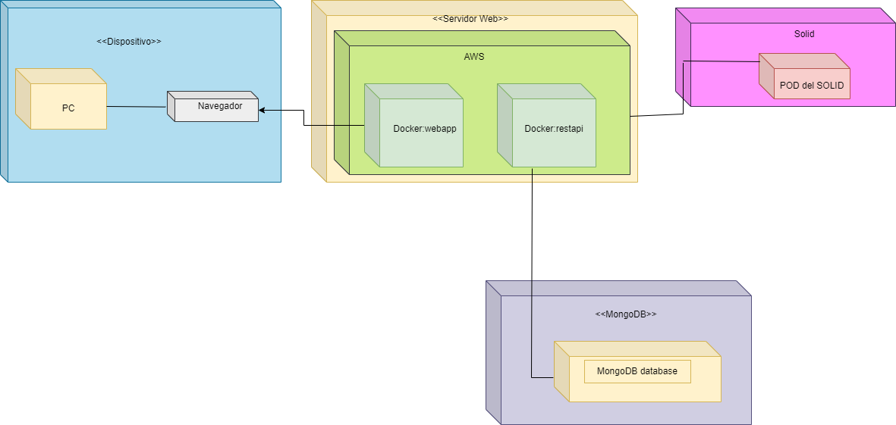
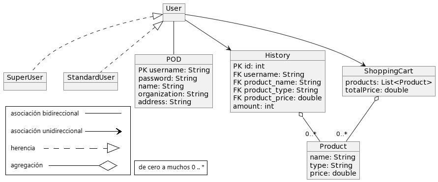

1. Introduction and Goals
This is a group project oriented to the ASW subject and with this it is intended to learn to work in teams in a professional way and to manage and develop a project continuously. The application will be an online store of all types of vehicles. Customer data must be secure and only be accessed by its owners, respecting the SOLID principles. Within project management, there are two stakeholders:
-
On the one hand, the developers, who intend to create a project to match, of a professional nature or, at least, that appears so. In addition, we intend that it meets, at least, the requirements imposed by the teachers.
-
On the other hand, the professors, the people who have imposed on us the development of the project together with its restrictions.
1.1. Requirements Overview
This application aims to be a digital store for all kinds of second-hand vehicles. The store must respect the privacy of customers by complying with the SOLID principles, that is, store customer data through personal web servers (Pods), but only if they allow it. The main expected functionality is:
-
Show the catalog of available vehicles, in such a way that any user can access any that is for sale, even if they do not register.
-
Purchase of vehicles by customers, which can be purchased by anyone as long as it is for sale and they have logged in.
-
Modification of the catalog: apart from the clients, there will be an administrator user who will be able to add or remove vehicles from the application’s list of vehicles for sale.
-
Registration: for a user to be able to buy any vehicle, they must sign up as a client of the application.
-
Login: if a user has previously registered, they must be able to log back in with all of their previously saved data. Other functional requirements that the application must meet is to calculate the costs of a purchase from a customer based on the selected products and the shipping distance of these. Customers must also be able to view the orders placed at all times.
1.2. Quality Goals
| Nº | Quality attribute | Motivation |
|---|---|---|
1 |
Usability |
Users should be able to use the page with little difficulty without having to search for instructions for use. A web application is useless if no one knows how to handle it. |
2 |
Security |
The application must be able to resist attack from anyone trying to take down the application or extract information from it without authorization. If a user doesn’t feel safe in the app, they might leave the app. |
3 |
Confidentiality |
Customer data can only be accessed by them, and the store manager must be the only one capable of changing the available stock. |
1.3. Stakeholders
There are various stakeholders related to the application to be developed. These are the relevant ones:
-
Developers: they are the people in charge of developing the project and researching tools to be used in the project, which, in this case, are the members of the 6-c laboratory team.
-
Professors: they are the people who “finance” the development of the project. These would be the teachers of the ASW subject, in charge of evaluating the development of the project.
2. Architecture Constraints
This are the project constraints that we have and their explanations.
Constraint |
Explanation |
SOLID and the PODs |
We want to introduce in our project the principles of SOLID, and for this we will use the PODs system, which gives us a descentralized architecture for the app |
Node.js |
Node it’s designed to build scalable network applications |
GitHub |
For Source Control we use GitHub this will help us to resolve conflicts and manage changes in the project |
Docker |
We need to encapsulate and deploy the code anywhere so we will use Docker for this |
This are the constraints that affect the develop, organization and enviroment of the project.
Constraint |
Explanation |
Team members |
Our team is formed by 6 software engineering students, we all have other subjects, and work, we need to work together and smart to get a good result |
Time limit |
We have aproximately 2 months and a half to end the project, that is the end of the course, when the 'Architecture of Software' subject ends |
Sprints |
We have 4 deadlines or sprints in the course. We have some objectives to achieve in each of those sprints |
Meetings |
We are going to do at least 2 meetings per week, the duration of each, depends on the amount of things we have to speak or decide, and the work we need to do as a team |
Decisions about how are we going to document our project and how are we going to work in general.
Constraint |
Explanation |
Arc42 |
We have to use Arc42 to document out project because it’s used professionally and it’s clear and simple |
Language |
We decided to write the documentation of the project in english because it’s a trade-off, its harder to us to do it, but its more professional |
3. System Scope and Context
DeDe is a web application focused on allowing users to buy used vehicles, ranging from simple bicycles all the way to automobiles. Clients will be able to browse and buy different vehicles they like on our web, as long as they have signed up, and are signed in. They will need to provide our services with a billing address and payment method in order to let us process their purchase.
3.1. Business Context
We have clients who want to buy used vehicles. The clients need to sign up in order to use the application. The vehicles are registered into the database by Administrator users. They can also remove said vehicles. Orders are used to link a buyer with the vehicle, or products that they are buying, and will be shipped to their home.
We also have an administrator, or superuser, who will be able to add new products to the database, remove old ones.
The data in exchange is simple. The client will be able to see information about the vehicle and products, they will be able to see a representative name, price and images. The store will need the clients' full name, billing address, age, username and a password to store their information. At least a payment mean will be needed for the client to be able to make purchases. The seller (the application, in this case), on the other hand, will receive the client’s billing address from his Solid POD, so as to be able to ship the package, as well as their full name in order to recognize them.
The Solid POD allows us to receive information from the client relevant to the store and its shipping methods.
The database (MongoDB) stores information about past orders, current products (such as vehicles or accesories), and products that have been in stock on the past.

3.2. Techincal Context
The application will be deployed online, and will be accessible through any modern web browser. To develop its frontend we will be using React. We will use MongoDB as our database, and we will link the backend and frontend with Express. The application will be writen in TypeScript, a JavaScript extension, so to speak, that lets programmers use a very similar syntax to that of JS, but will allow us to avoid common mistakes through the use of static type checking.
We will be using the Solid architecture, with the objective of protecting our users' information, only giving access to the data they want to provide us, which will be necessary for us to process their purchases.
The main objective of this system is to provide users who want to buy used vehicles a safe space to use for this purpose, where only the information they want to share is used, and especially not taken from them. Every purchase they make will be stored in our database, but is not our property. This means, if at any given time a client decides to hide this information from us, they are in their right.
System |
Utility |
Solid |
We use Solid to protect our users' private information. |
MongoDB |
It allows us to store the data regarding clients, orders, and products. |
TypeScript |
The language chosen to code the system and give it all its functionality. |
Express |
JavaScript library that allows us to link the database with the frontend. |
React |
JavaScript library used to create the frontend. It is based on components. |
4. Solution Strategy
4.1. Technology decisions
The main libraries we are going to use in our project are:
-
React: The main library for the front-end of the app.
-
TypeScript: JavaScript but with types, its usefull for programming.
-
Node.js: Package manager for the project.
-
SOLID Pods: For descentraliced data usage.
-
MongoDB: Database for the different items in our project.
-
GitHub: For source control.
-
GitKraken: Simplifies the use of Git.
-
Docker: For encapsulate and deploy the code in an easier way.
-
Heroku: For the webApp deployment.
-
AsciiDoc: For an easier way to document the project.
-
We will use the issues system to comunicate with the other developers, to leave a register of what its happening in our project continously.
-
Another way to communicate and work will be the face to face meetings and the online meetings, in this meeting we will argue the problems and the progress in our individual, and collective work.
-
We will use the GitHub tool that let us create a project to work like an agile methodology. With this we will add the product backlog user stories that we can asign to team members.
5. Building Block View
The building block view shows the static decomposition of the system into building blocks (modules, components, subsystems, classes, interfaces, packages, libraries, frameworks, layers, partitions, tiers, functions, macros, operations, datas structures, …) as well as their dependencies (relationships, associations, …)
This view is mandatory for every architecture documentation. In analogy to a house this is the floor plan.
Maintain an overview of your source code by making its structure understandable through abstraction.
This allows you to communicate with your stakeholder on an abstract level without disclosing implementation details.
The building block view is a hierarchical collection of black boxes and white boxes (see figure below) and their descriptions.

Level 1 is the white box description of the overall system together with black box descriptions of all contained building blocks.
Level 2 zooms into some building blocks of level 1. Thus it contains the white box description of selected building blocks of level 1, together with black box descriptions of their internal building blocks.
Level 3 zooms into selected building blocks of level 2, and so on.
5.1. Whitebox Overall System
<Overview Diagram>
- Motivation
-
<text explanation>
- Contained Building Blocks
-
<Description of contained building block (black boxes)>
- Important Interfaces
-
<Description of important interfaces>
5.1.1. <Name black box 1>
<Purpose/Responsibility>
<Interface(s)>
<(Optional) Quality/Performance Characteristics>
<(Optional) Directory/File Location>
<(Optional) Fulfilled Requirements>
<(optional) Open Issues/Problems/Risks>
5.1.2. <Name black box 2>
<black box template>
5.1.3. <Name black box n>
<black box template>
5.1.4. <Name interface 1>
…
5.1.5. <Name interface m>
5.2. Level 2
5.2.1. White Box <building block 1>
<white box template>
5.2.2. White Box <building block 2>
<white box template>
…
5.2.3. White Box <building block m>
<white box template>
5.3. Level 3
5.3.1. White Box <_building block x.1_>
<white box template>
5.3.2. White Box <_building block x.2_>
<white box template>
5.3.3. White Box <_building block y.1_>
<white box template>
6. Runtime View
In this section, we will develop the main runtime views of use cases of our application.
6.1. Sign Up
The customer will be able to navigate freely in the store without having to be registered, but in case he wants to buy a vehicle he must register. The client will be asked to enter their personal data, if this data is already registered in the database, the registration will be canceled and the log in window will be displayed. On the other hand, the customer’s data will be saved in the database and access to make the purchase will be allowed.
6.2. Log In
Both the client and the administrator will see the option to log in, for this they must enter their username and password, if they are registered in the database, the system is loaded corresponding to their role and access is allowed, otherwise they will be deny access.

6.3. Buy Product
The client selects all the elements that he is going to buy, a new order is made that must be registered in the database. If there is no problem, a confirmation message will be sent.
Version 2.

6.4. Registration Product
The administrator will be the only one capable of registering a new vehicle, for this he must enter the data about the vehicle. The vehicle will be added to the database, once the vehicle registration is finished, an internal message will be sent to the products window and it will be updated immediately. The user will be able to see the updated list of products without any problem.
Version 2.

6.5. Product Deletion
The administrator is the only user able to delete vehicles by entering the vehicle code. The vehicle is checked to see if it exists in the database, and if it does, it will be deleted. The product view is then updated and the deleted product will not appear. Obviously, you cannot purchase a deleted vehicle.

6.6. Adding a Superuser
In order to have an administrator, we need to register one in the System. We check if the user exists. If so, we update their status as a superuser on the database. After this, they will have permission to add and delete products. 'Superuser' is the same as 'Administrator'.

6.7. Deleting a Superuser
If the application has too many administrators, it could be an option to delete some from the System. We check if the user exists and it isn’t the only administrator. If so, the administrator will be deleted. If else, an error will be sent to the System.

6.8. View Users
We request the users to the database,then we update it.If all was correct the Admin can see the list of users.

7. Deployment View

7.1. Motivation
The motivation of this deployment structure is the correct understanding of how components of the project behave and are related in runtime.
7.2. Mapping
| Element | Description |
|---|---|
Dispositivo |
For the user it is the way to connect to the internet and use our application. |
Servidor Web |
Serve for the browser. Every Browser can run the aplication |
Mongo Db |
Is the database |
Pod |
Solid PODs that we create on inrupt server |
8. Cross-cutting Concepts
This section describes overall, principal regulations and solution ideas that are
relevant in multiple parts (= cross-cutting) of your system.
Such concepts are often related to multiple building blocks.
They can include many different topics, such as
* domain models
* architecture patterns or design patterns
* rules for using specific technology
* principal, often technical decisions of overall decisions
* implementation rules
.Motivation
Concepts form the basis for conceptual integrity (consistency, homogeneity)
of the architecture. Thus, they are an important contribution to achieve inner qualities of your system.
Some of these concepts cannot be assigned to individual building blocks
(e.g. security or safety). This is the place in the template that we provided for a
cohesive specification of such concepts.
.Form
The form can be varied:
* concept papers with any kind of structure
* cross-cutting model excerpts or scenarios using notations of the architecture views
* sample implementations, especially for technical concepts
* reference to typical usage of standard frameworks (e.g. using Hibernate for object/relational mapping)
.Structure
A potential (but not mandatory) structure for this section could be:
* Domain concepts
* User Experience concepts (UX)
* Safety and security concepts
* Architecture and design patterns
* "Under-the-hood"
* development concepts
* operational concepts
Note: it might be difficult to assign individual concepts to one specific topic
on this list.


-
User: interface that groups the generic behaviors of a user.
-
SuperUser: user administrator of the application. It has special permissions such as adding or deleting products and viewing the list of all existing users in the database.
-
StandardUser: standar user of the application. They store their data in PODs.
-
POD: stores the data of each of the user.
-
username (primary key): user account login name.
-
password: user’s access key to his account.
-
organization: organization to which the user belongs.
-
name: user’s real name.
-
address: user’s delivery address.
-
-
ShoppingCart: virtual shopping cart where products are stored.
-
products: list that contains all the existing products in the shopping cart.
-
totalPrice: cumulative price of all products in the shopping cart.
-
-
History: user purchase history.
-
id (primary key): identification of the product in relation to the user. Necessary to add to the history table.
-
username: user account login name.
-
product_name: product designation.
-
product_type: product category.
-
product_price: price of the product.
-
amount: quantity of purchased product.
-
-
Product: each of the products available in the online store.
-
name: product designation.
-
type: product category.
-
price: total price of the product.
-
This application requires the user to register in order to authenticate and place an order. For this purpose, a registration form will be available, in which the user will have to fill in a series of data including a password that he/she will then have to use in the authentication form to access his/her personal account. Once authenticated the user will be able to access the list of products that can be added to the cart and then make the purchase.
One of the objectives of the application, since it is an online sales system, is customer security. In order to guarantee this aspect, a procedure is used in which each user will have a password with which he/she can access his/her account. In addition to this, PODs (Personal Online Datastore) are used to store all user data, so they are in a trusted environment.
SOLID principles are used to store the user data.
-
Shopping cart: you can look at the products you currently have in your shopping cart and delete them from there.
-
History: it is possible to review personal purchase history.
-
Products view: in this view you can see all the available products and add them to the cart from there.
In order to offer a good user experience, the application is designed to be easily navigable and with a friendly interface.
-
Architecture and Design Patterns
-
Additional Libraries
-
Acessibility
-
Development Concepts
9. Design Decisions
The following key decisions have been made regarding the design of the application architecture throughout the project:
-
Status: Accepted
-
Context: React, Express and Node are restrictions, so adding MongoDB as a database tool is the most plausible. Other alternatives to consider are SQL Server and HSQLDB for persistence management.
-
Decision: A MongoDB database will be used to store application data such as vehicles for sale.
-
Consequences: you must learn to use MongoDB, as well as include it in the project.
-
Status: Accepted
-
Context: the teachers have strongly recommended the use of this tool to facilitate the development of the code and deploy the application. Other alternatives are PodMan, and Singularity, for example.
-
Decision: Docker will be used as a tool to avoid certain repetitive and costly tasks, thus speeding up the development of the project.
-
Consequences: We will have to understand how Docker works in the project, but once we do, we hope that it will facilitate long-term development.
-
Status: Proposed
-
Context: software is needed to deploy the application once it is finished, and this allows it to be done through a direct link to the Github repository where the project is. In addition, it supports a large number of programming languages, including React and TypeScript, which will be used in the project. Other alternatives are Google App Engine, and Netlify, for example.
-
Decision: by allowing the use of the Github repository to deploy the web application, its use is very practical.
-
Consequences: once the Github repository is synchronized with Heroku, it is expected that we will not have any more concerns about the deployment of the application.
-
Status: Proposed
-
Context: software is needed to deploy the application once finished, and this allows you to deploy any application professionally. Other alternatives are Netlify and Heroku, for example.
-
Decision: this software allows you to professionally deploy any web application using virtual machines.
-
Consequences: the application may need to be maintained frequently.
10. Quality Requirements
10.1. Quality Tree

10.2. Quality Scenarios
| Quality goal | Scenario | Priority |
|---|---|---|
Usability |
The application has to be usable by everyone, and the more specific functionalities have to be quickly accessible. |
High |
Security |
the application has to be very secure and has to be robust so that customers do not have problems with their data. |
High |
Confidentiality |
The information must be fully decentralized and the user has complete control over his data that he can share with the application. |
High |
Maintainability |
The code must be reusable and easy to make changes to, so that if necessary, the code can be updated in the future. |
Medium |
Portability |
The application should be adapted to the device where it is deployed, from computers to mobile phones or tablets. |
Medium |
Compatibility |
The application must be easily deployable on different available systems |
Low-Medium |
11. Risks and Technical Debts
A list of identified technical risks or technical debts, ordered by priority.
Technical Risk |
Explanation |
mitigation/acceptance |
Experience |
Lack of experience of developers using the technologies required for the project |
Team effort to study and learn what is necessary to carry out the project |
Technical Debt |
Explanation |
Solution |
Typescript |
A minimum level of TypeScript knowledge is required to begin project development |
Study the language and practice with it |
React |
Further research is needed on React technology for front-end development |
Becoming familiar with the use of the library |
MongoDB |
Lack of knowledge on the use of MongoDB for the development of the database |
Research and learn about the use of the database system |
Express |
Lack of knowledge on the use of Express for subdomain routing management |
Research and learn about the use of the framework |
SOLID |
It is necessary to seek information on SOLID for the development of the project |
Study SOLID principles and how to apply them |
APIs |
Lack of knowledge about the APIs required for the development of the application |
Search and learn about the use of APIs |
Destructuring |
Lack of knowledge about the term and what is involved in destructuring |
Learn about destructuring and its use in TypeScript |
Tests |
Current lack of tests for the project |
Thinking and developing tests |
Documentation |
Lack of full documentation |
Develop and update current documentation as the project progresses |
Qualification |
Lack of qualification on the part of the team to develop such a large project |
Team effort to remedy existing shortcomings |
Code externalization |
High dependence on external code |
Try to reduce dependencies to external code |
12. Glossary
| Term | Definition |
|---|---|
Solid |
Solid (derived from "social linked data") is a proposed set of conventions and tools for building decentralized social applications. |
React |
React is a free and open-source front-end JavaScript library for building user interfaces based on UI components. |
TypeScript |
TypeScript is a strongly typed programming language that builds on JavaScript. |
Express |
Express is a back end web application framework for Node.js. |
Node.js |
Node.js is a runtime system used mostly for making server side applications with JavaScript. |
MongoDB |
MongoDB is an open source NoSQL database management program. |
NoSQL |
NoSQL describes the wide variety of database technologies created to address the shortcomings of RDBMS and the demands of modern software development. |
RDBMS |
Relational DataBase Management System |
About arc42
arc42, the Template for documentation of software and system architecture.
By Dr. Gernot Starke, Dr. Peter Hruschka and contributors.
Template Revision: 7.0 EN (based on asciidoc), January 2017
© We acknowledge that this document uses material from the arc 42 architecture template, http://www.arc42.de. Created by Dr. Peter Hruschka & Dr. Gernot Starke.